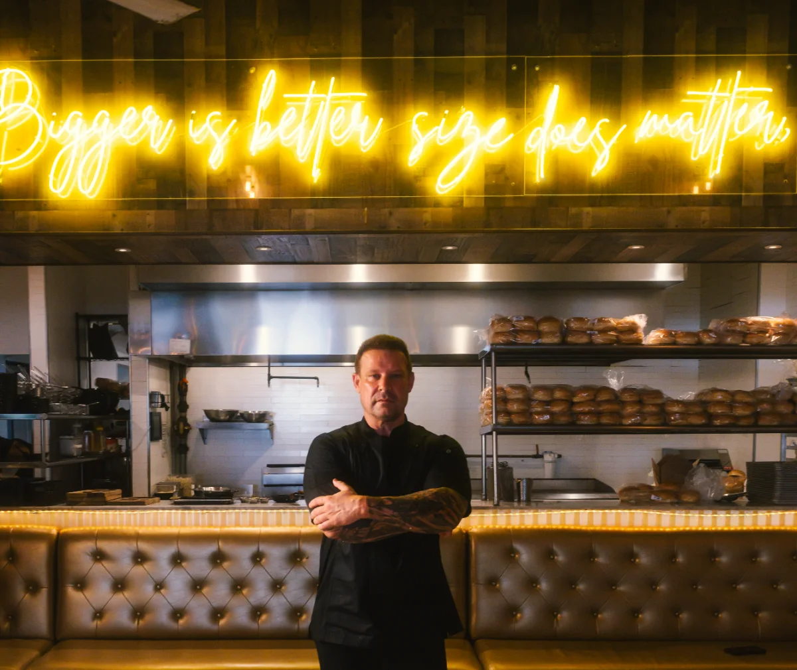
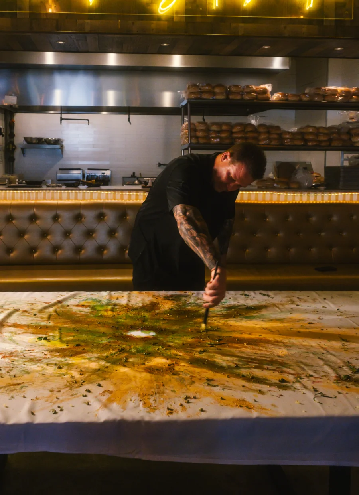
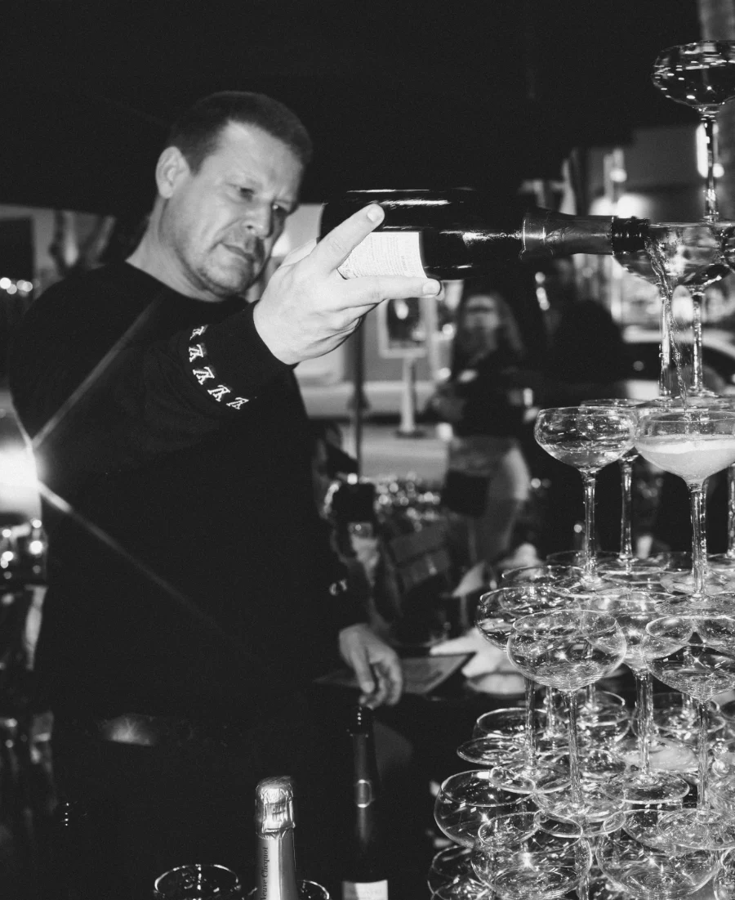
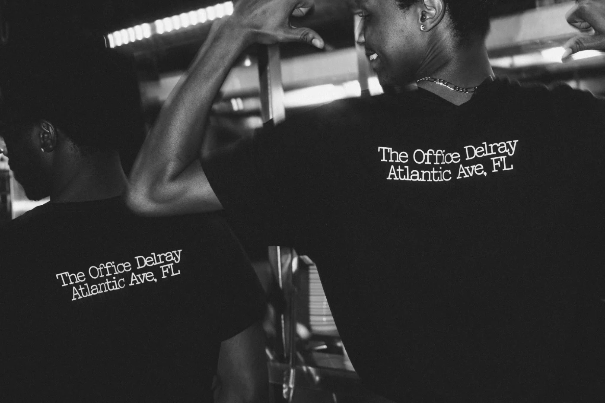

Built in hospitality. Proven in Miami.
Alexander Ringleb
- Burgermeister, Miami
- The Office, Delray Beach
- Balthazar, New York
- Wolfgang’s, Beverly Hills
- Casa Tua, Miami Beach
- Devito, Miami Beach
- Casa Casuarina, Miami Beach
- Vice Lounge, Miami
- Europa Deli, Miami Beach
About
The operator investors trust in Miami.
Born in Bochum, Germany, Alexander grew up watching his great-aunt run her restaurant in Austria with grace and intention. The rhythm of a full room imprinted on him before he had words for it. Hospitality wasn’t a career choice. It was already in the room.
He formalized his craft at culinary school in Germany, trained at the Holiday Inn, then took his talent to Aruba and the United States, rising from server to General Manager at Balthazar in New York, Wolfgang’s Steakhouse in Beverly Hills, Casa Tua in Miami Beach, and the Versace Mansion, where he served as Director of Operations.
Few people understand Miami the way Alexander does. He has lived through its boom cycles and slow seasons, watched neighborhoods transform, and learned to read the city’s rhythms before the market catches on. He knows which corridors are rising, and which ones aren’t.
His network of general contractors, vendors, city officials, and expediters gives every project a decisive edge, from the first permit to opening night. He is genuinely embedded in the Miami community, known for charitable involvement and showing up for the people of this city.
Alexander RinglebThe best operators don’t just run restaurants. They shape how people experience a city.
Cases
The record, house by house.
Four houses in South Florida. Two of them are set out in full here: one built from nothing into one of Miami’s most recognized brands, one that has held Atlantic Avenue for seventeen years.
- Burgermeister Brickell & South Beach, Miami
-
The Office
Delray Atlantic Avenue, Delray Beach - Europa Deli Miami Beach Case material is not yet available.
- Vice Lounge Miami Case material is not yet available.
01 · Burgermeister Miami
Built from nothing. Now one of Miami’s most recognized brands.
Burgermeister started with one conviction: that a burger could be genuinely great. Built from scratch with limited funds, it became one of Miami’s highest-rated restaurant concepts, earning national attention for its quality, consistency, and character.
With locations in Brickell and South Beach, Burgermeister is the clearest proof of what Alexander delivers: a concept taken from nothing to remarkable, in one of the world’s most competitive markets.
From menu to interior design, staff culture to neighborhood positioning. Every element was his. Not a franchise. An original.


- Miami Locations
- 2
- Years Operating
- 10+
- Google Rating
- 4.7★
Recognition
- Haute Living Feature
- VoyageMIA Cover Story
- SOBEWFF Official Personality
- Miami New Times
- Biscayne Times
- Burger Beast Podcast
- South Florida’s Best Burger
02 · The Office Delray
17 years. Still the one people come back to.

The Office Delray is a cornerstone of Atlantic Avenue, one of South Florida’s most vibrant dining corridors. For 17 years, it has outlasted trends, survived cycles, and earned the kind of loyalty you can’t manufacture.
Most restaurants don’t survive their third year. The Office has thrived for nearly two decades. That is not luck. It is the result of the right concept, the right market, and the right operator. It compounds in value over time.

Social media
Miami through an operator’s eyes.
Miami Marine Stadium
The vote over a 34-year landmark
View on Instagram ↗The ‘luxury’ condo problem
When luxury stops meaning built to last
View on Instagram ↗Miami’s dining squeeze
Why mid-tier restaurants are closing
View on Instagram ↗